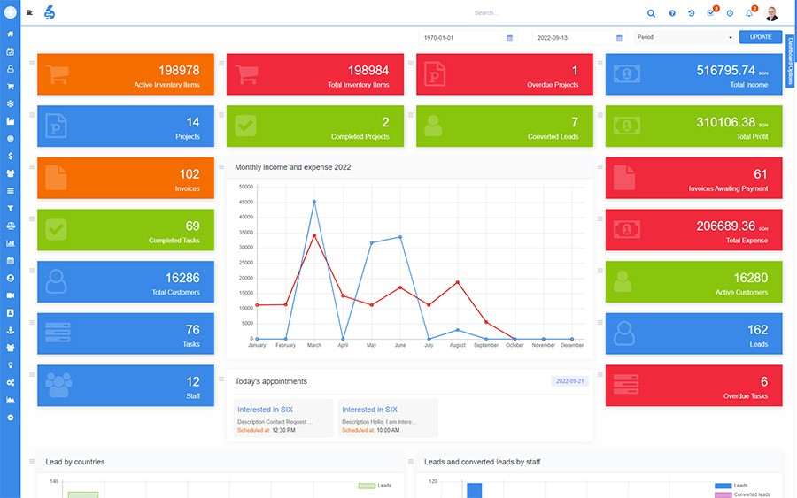
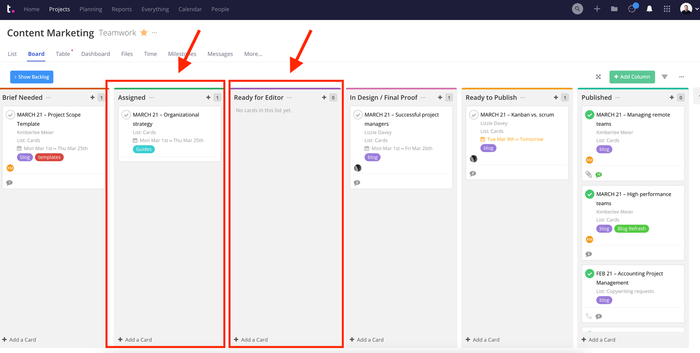

ConsultPro Management
ConsultPro Management is a professional consulting ERP module
for managing clients, projects, tasks and billing.
Main Features
- Client Management
- Project Tracking
- Task Management
- Timesheet Tracking
- Automated Billing
- Analytics Dashboard

